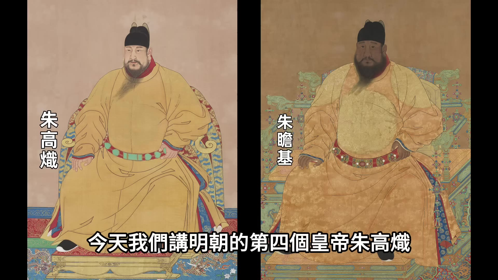
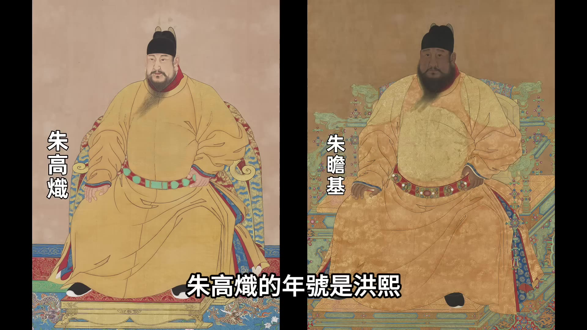
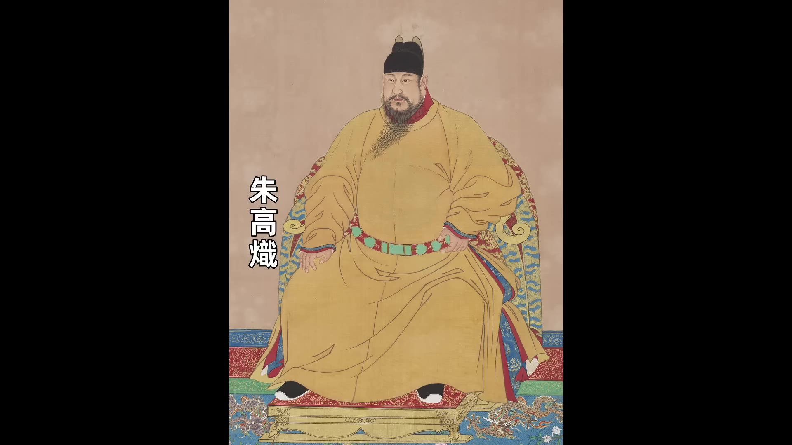
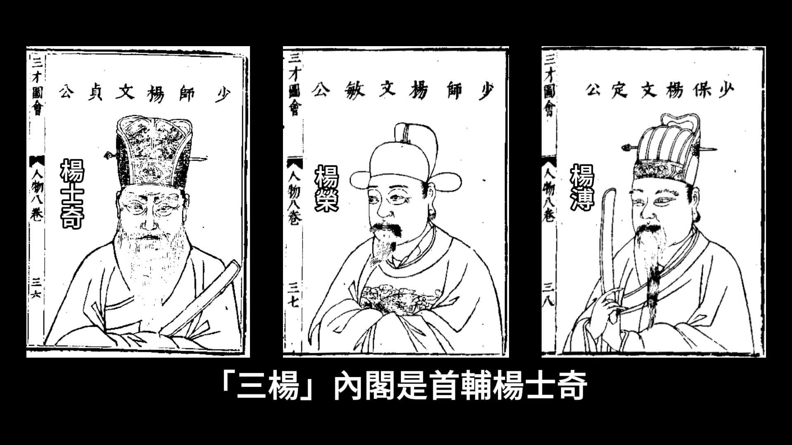
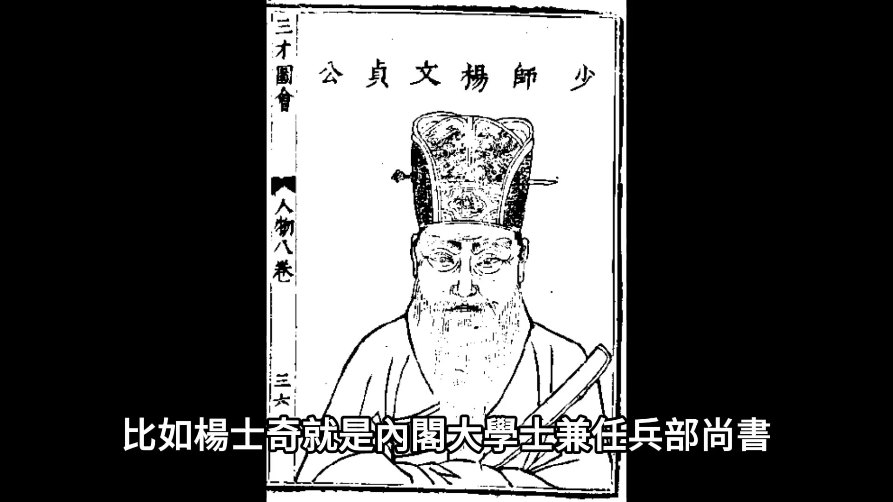
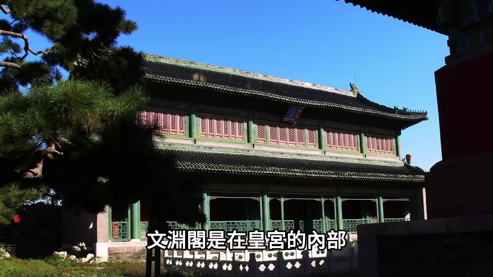
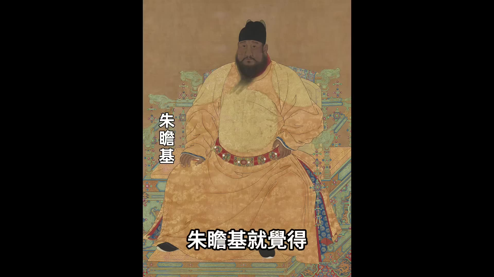
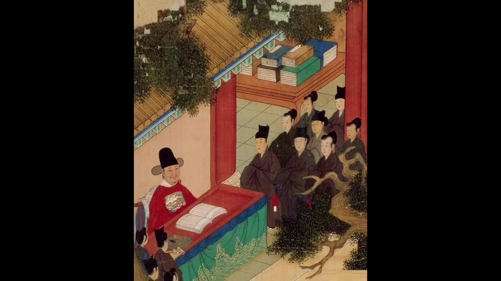
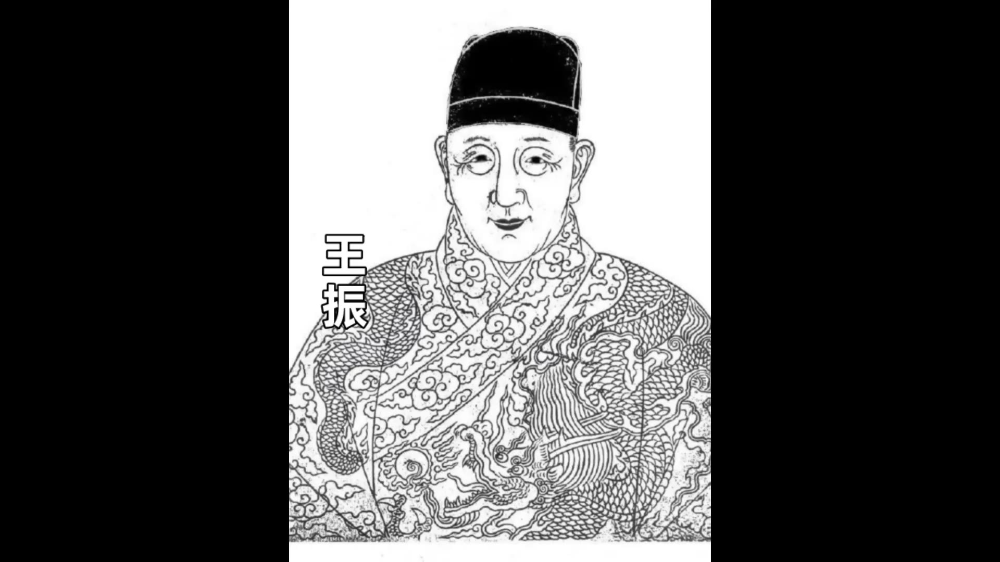

00:00:00
大家好，今天我們講明朝的第四個皇帝朱高熾和第五個皇帝朱瞻基，因為朱高熾在位的時間很短，他登基之後10個月就去世了，所以我們把他和朱瞻基一起講。朱高熾的年號是洪熙，廟號是仁宗；朱瞻基的年號是宣德，廟號是宣宗。仁宗和宣宗這兩個皇帝統治的時期被並稱為「仁宣之治」，被後人認為是明朝政治最清明的時期。仁宗和宣宗統治的時期是明朝文官政治形成的時期，同時也是宦官專政的萌芽期，這個時期形成的政治風氣給大明王朝未來200年的政治奠定了基礎，所以仁宣時期的政治和政策很值得我們說一說。
仁宗和宣宗統治的時期之所以會被認為是明朝政治最清明的時期，因為他們實施的政策總體上來說是讓國家休養生息。我們上期講了朱棣統治的永樂時代，在明朝的北方五征漠北，在南方出征安南，還有鄭和下西洋，還有遷都北京，這都是耗費巨大的軍事行動和政治工程，所以在朱棣去世的時候，明朝國庫基本上已經空了，百姓的負擔也非常沈重。
朱高熾登基之後立刻改變了朱棣的擴張政策，他開始收縮軍事行動，停止那些勞民傷財的面子工程。在軍事方面，朱高熾首先從安南撤兵，放棄對安南的佔領。在朱棣統治期間，明朝強行佔領安南，朱棣派兵鎮壓安南的反抗，雙方反反復復打了20多年時間，明朝的人力財力都消耗無數，始終也沒能終結安南的戰亂。朱高熾一上台立刻就從安南撤兵，放棄了這個沈重的包袱。對蒙古方面，仁宣時期選擇的策略是懷柔政策，這和永樂時期也完全不同。永樂時期的政策是皇帝御駕親征，想要徹底去消滅蒙古的勢力，但是效果並不好，蒙古沒被消滅不說，朱棣每次御駕親征耗費都是巨大。仁宣時期朝廷認為蒙古人南下搶掠的主要原因是缺乏糧食，他們就放寬了對蒙古部落的朝貢政策，蒙古的各個部落只要首領願意稱臣納貢，明朝就賜予封號，讓他們在名義上成為大明的藩屬國。這種朝貢貿易對蒙古部落實際上是經濟扶持，蒙古的使者可以用草原的馬匹來交換中原的糧食、茶葉和布匹，每次朝貢的時候他們不僅能換回比朝貢品多很多的物品，明朝還會給他們十分豐厚的賞賜，這實際上就是明朝的朝廷在用經濟換取和平。這麼做從財政方面來看其實比朱棣時期的遠征打仗要節省的多，也能保障邊境的安寧。這是在軍事方面，仁宣時期開始收縮武力，盡量不對外開釁。
在經濟方面，仁宣時期停止一切燒錢的面子工程，比如說仁宗即位之後，他立刻就停止了鄭和下西洋的活動，雖然說在宣宗時期還有一次復航，但是下西洋的性質也有所轉變，轉變為比較節儉的外交往來。還有就是賦稅政策的改革，仁宣之治最得民心的政策就是賦稅方面。永樂時期很多老百姓累積欠下大量的稅糧，仁宗即位之後他把這些欠糧全部都給赦兔了，這些欠稅的赦免對老百姓來說是卸掉了沈重的枷鎖，很多老百姓就是因為欠税而流亡變成了流民，欠稅赦免之後他們就可以回到自己的土地重新回歸農耕生活。仁宗和宣宗這樣的政策既減少了國家無效的擴張性建設，又鼓勵百姓恢復生產，民間社會自身的恢復力是很驚人的，沒用多少年明朝民間就重新開始變得富庶，國庫也開始充盈，這就是仁宣之治的休養生息。不過這個休養生息的國策能夠成功，最關鍵的原因是政治改革的成功，一批賢臣是仁宗和宣宗用了改變了永樂時期恐怖的政治風氣。
仁宗即位之後首先撥亂反正，永樂時期由於朱棣是篡位上台的，朱允炆時期的賢臣被殺戮或者監禁，仁宗即位之後他下令給這些官員平反，並且把還在監獄裡面的大臣給釋放出來，然後在整個仁宗和宣宗的時期，他們一改永樂時期恐怖的政治氛圍，讓官僚系統順暢運行。仁宗去世之後，宣宗即位的初年，朝廷上正式形成了「三楊」內閣，是首輔楊士奇、次輔楊榮還有剛入閣的楊溥。

_說明文字_

_說明文字_
_說明文字_

_說明文字_

00:05:02
這「三楊」是歷史上被稱頌的賢臣，他們對明朝文官制度的形成有重大貢獻。明朝初期，朱元璋廢除丞相，由皇帝親自批閱所有奏章，這讓朱元璋完成了皇帝的集權，沒有任何人可以動搖皇權的地位。但是皇帝的集權也帶來一個問題，就是皇帝的工作量太大，大到皇帝不能有絲毫松懈，不說而且會耽誤到政務的處理。尤其是仁宗登基之後，仁宗的身體很不好，很多政務就都交給內閣大學士批閱。仁宗去世之後，在宣宗時期，朝廷政務大多數都是由「三楊」主持。「三楊」主持朝政期間正式形成了「票擬制度」，這個票擬制度就是未來明朝的主要工作流程。票擬制度的運作分為三步：第一步叫進呈，進呈就是全國各地所有的奏章先送進內閣，由內閣大學士先看；第二步是票擬，票擬就是內閣大學士看完奏章之後，他們用黑筆在小紙條上寫上供皇帝參考的意見，比如說建議同意或者建議撥款或者建議嚴辦等等這樣批復的意見；第三步是批紅，批紅就是內閣把奏章呈送給皇帝，奏章呈送給皇帝的時候，每份奏章上面都要附著著內閣批復意見的小紙條。皇帝看到之後如果同意就用紅筆照著抄一遍。票擬制度形成之後，皇帝的工作量大為減輕，雖然皇帝還是要親自做最後的把關，但是他絕大多數情況都是同意，都是照著內閣的票擬抄一遍就行。票擬制度從根本上來說呀是一種分權，是內閣大學士從皇帝手裡面分出來決策的「預設權」。
雖然還是由皇帝做最後的決策，但是如果皇帝偷懶或者平庸，內閣就是朝廷實際的首腦。因為內閣對明朝後來的政治決策很重要，我們還是簡單介紹一下內閣的形成。內閣可以算是一個「意外」的制度的演變。朱元璋是借著胡惟庸案徹底廢除了中書省和丞相制度，廢除丞相之後所有的權力都收歸皇帝。因為沒有丞相，所以朱元璋每天要處理的奏章量非常大，這時候朱元璋就設立了殿閣大學士。殿閣大學士是什麼？殿閣大學士是四殿兩閣：四殿是中極殿大學士（原：華蓋殿大學士）、建極殿大學士（原：謹身殿大學士）、文華殿大學士和武英殿大學士；兩閣是文淵閣大學士和東閣大學士。這些大學士的主要工作就是輔助朱元璋處理奏章，他們其實就是朱元璋的私人秘書，他們接觸的都是朝廷最高級別的政務，但是他們沒有任何實權。朱元璋給他們定的品級是正五品，品級也並不高。所以殿閣大學士是從朱元璋開始的。
到永樂時期，由於朱棣他經常自己御駕親征，他御駕親征朝廷就需要一個常設的處理政務的機構。朱棣就讓這些大學士集中在文淵閣裡面工作，並且允許他們參與政務，他們的辦公地點是在文淵閣，文淵閣是在皇宮的內部，跟皇宫外部的外廷有所區分，所以就叫內閣。內閣的名字就是這麼來的。永樂期間實際上是內閣大學士參與政務的一個過渡期，他們從單純的秘書變成可以參與一部分政務決策的過程。到仁宣時期就是「三楊」內閣時期，內閣的功能正式從「秘書處」轉變成了「決策中心」，尤其是票擬制度形成之後，內閣的決策權的地位也就正式確立了。內閣實際上是做了以前中書省和丞相的工作，他們從皇帝的手裡面分到了一部分決策權。其實嚴格來說呀不能叫決策權，因為按照明朝的制度決策權始終是在皇帝手裡，但是畢竟大部分的奏章皇帝都是根據內閣的票擬來批復，所以內閣的權力就很大。
但是這時候就有一個矛盾點，矛盾點是內閣大學士的品級太低，他們的品級是正五品，而他們是政務的真正決策者，而政務的執行者是六部尚書，六部尚書的品級是正二品。讓正五品的內閣大學士去指揮正二品的六部尚書去執行政務，他們根本指揮不動。為了解決內閣大學士品級過低的問題，皇帝開始讓內閣大學士兼任六部尚書的頭銜，比如楊士奇就是內閣大學士兼任兵部尚書。

楊溥是內閣大學士兼任禮部尚書，這樣內閣大學士就既有決策權又有執行權，他們就真的擁有了以前丞相才有的權力，他們可以統帥百官一起治理國家，這是明朝文官政治的起點。但是按照傳統文化的觀點來看

00:10:02
他們的權力來源還是存在法律上的問題，因為他們畢竟不是真的丞相，這是內閣制度天然的缺陷。我們剛才說了內閣制度的形成，這個形成的過程更像是一個意外的制度的演變。內閣最初只是設定為是皇帝的秘書，後來演變成百官的統帥，但是從法律層面來講，他們卻並沒有丞相的名分。名不正則言不順，他們的權力就有點像是從皇帝那偷來的權力。他們有丞相之權卻沒有丞相之名，錢穆先生在說明朝制度的時候就說明朝的內閣是權臣而不是大臣。從傳統文化的觀點來看，權臣和大臣是有很大分別的。權臣弄權，如果你是丞相，你就是當權，按照丞相的職責，朝廷上所有的事情你都該問你都該管，你不管就是不對的，不管是失職的。但是如果你不是丞相，你卻過問了職責之外的事情，掌握了不該掌握的權力，你就是權臣。權臣掌握權力叫弄權，是違法的也是違背傳統道德的，所以權臣一般都被看作是奸臣。所以後來張居正當內閣首輔的時候，當時的清議就有很多人說他是權臣，說他擅權。這麼說其實從法理上來看並沒有問題，明朝內閣大學士沒有丞相之名卻行使丞相之權，這恰恰就是屬於權臣。但是沒辦法，朱元璋不允許設丞相，他的後代都遵從祖制也沒設丞相，只能用這種內閣替代的辦法。為了保障進入內閣的人員都是文人精英，『三楊』內閣開啓了一個風氣，也可以說是開啓了一個潛規則，就是非進士不入翰林。
非翰林不入內閣。在朱元璋時期，進入內閣不一定都得通過科舉考試，當時的內閣成員一般都是由大臣推舉，然後朱元璋親自面試挑選，朱元璋自己決定誰入內閣，這時候沒有一個明確的選拔制度。『三楊』內閣時期重新確立了內閣的選拔方式，想要進內閣必須要通過科舉，科舉考中進士之後，進士裡面最優秀的人才被選入翰林院，在翰林院裡面歷練之後再由廷推或者欽定的方式確定進入內閣的人選。這是一套嚴苛的選拔流程，通過這套流程能夠保證進入內閣的人才一定都是文官裡面精英中的精英。這樣內閣的權力範圍、內閣的工作流程、內閣的選拔制度就都確定了，這就成為了大明王朝此後200多年的運行準則，這是明朝文官政治的形成。
下面我們來說宦官專權的問題。剛才我們講內閣和皇帝之間的工作流程，是內閣先看奏章，內閣看完奏章之後寫出意見，再把奏章和意見一起提交給皇帝，由皇帝做最後的批紅。奏章從內閣到皇帝，再從皇帝回到內閣的過程，這就給太監帶來上下其手的機會。本來太監也沒有這個機會，朱元璋時期明令規定太監不准干政，但是從朱棣開始，朱棣就開始重用太監，他給了太監很多特殊的權力，尤其是讓太監做一些秘密刺探的工作，並且設立東廠。不過這時候太監在皇帝眼裡面還是奴才，也沒有任何政治地位。太監干涉政治是從明英宗朱祁鎮開始的，朱祁鎮是我們今天講的宣宗朱瞻基的長子。太監干涉政治雖然是從朱祁鎮開始的，但是在朱瞻基時期，他做了兩件事情給太監干政鋪平了道路，這兩件事情一件是教太監識字，還有一件是讓太監幫他做批紅。剛才我們說過按照內閣和皇帝的工作流程，皇帝的工作是把最後一道關，就是最後的批紅，但是即使就這一項工作，就算他完全照抄內閣大臣的建議，皇帝的工作量也很大，皇帝也很辛苦，因為他每天要處理的奏章實在是很多。朱瞻基就覺得

如果太監可以幫他謄抄幫他整理就可以輕鬆很多。對於皇帝來說，這樣的事為什麼用太監而不用文官？他有兩方面考慮，第一方面是文官集團的權力已經越來越大了，按照朱元璋的設計，內閣大學士其實是皇帝的私人秘書，這些謄抄整理的活應該是內閣大學士來做，但是現在內閣大學士已經掌握了票擬權，把最後的批紅權也給他們，文官集團的權力就過大了，皇帝沒有辦法制衡。第二方面是相對於外面的文官來說，皇帝會認為太監是自己人是自己的家奴，讓太監來做就等於自己做，皇帝並不認為把這個批紅的工作讓太監來做是把權力分給了太監，但是如果說要把這個批紅的工作讓文官來做，皇帝會認為這是把權力給分出去了。
00:15:02
讓太監做皇帝只會認為權力還是掌握在自己手裡，所以朱瞻基就想讓太監來當自己的秘書幫他代筆。但是這就有一個問題，就是太監不識字，為了讓太監識字，朱瞻基在宮內設立了內書堂。這個內書堂是專門給太監開辦的學校，朱瞻基給內書堂安排的老師都是從翰林院裡面精心挑選的飽學之士，很多都是當時的著名文臣。跟著這些著名的大臣，太監學習之後，朱瞻基就讓太監幫他分擔批紅的工作。這樣皇帝的決策權就逐漸轉向了司禮監，司禮監是太監的首領機構。這樣整個政務的工作流程就改變了，變成了由內閣票擬，然後由司禮監太監代皇帝用紅筆批示。

朱瞻基在位的時候，他有能力壓制太監，太監只是給他做代筆工作。但是他去世之後，他年僅9歲的兒子朱祁鎮登基，太監就不僅僅是代筆工作了，太監獲得了真正的批紅權。明朝的第一位稱帝大監王振應運而出，王振掌權之後他做的第一件事，就是把我們以前講朱元璋的時候說過，朱元璋為了防止太監干預朝政，他特意在皇宮裡面立了一個牌子，寫的是「內臣不得干預政事」八個大字。王振掌權之後他第一件事就是把這個牌子給毀了。太監專權就是從王振開始的，所以朱瞻基教太監識字、讓太監代筆的這個行為，真的給明朝帶來了非常嚴重的惡果。後世很多史學家都認為，是朱瞻基給大明埋下了滅亡的禍根，這麼說也不算為過。

到明朝中後期，有的皇帝懶政，乾脆就把批紅權完全交給了太監。批紅權交給太監，太監就掌握了最高也是最後的決策權。有時候太監也懶得批奏章，他們乾脆就把奏章拿來當廢紙用。這種腐敗的政治只在明代有。在這種情況之下，外面的朝臣也弄得沒辦法，內閣大學士要是真想做點事情，他必須得勾結太監，因為內閣見不到皇帝，他不勾結太監就沒辦法得到最後的批紅，他就沒辦法正常工作。這是太監專權。
「仁宣之治」講到這裡就差不多了，最後總結一下，仁宗和宣宗時期在政策上是休養生息，讓國家的經濟得以恢復；在政治上確立了由內閣統領的文官政治體系，同時也埋下了太監干政的隱患。今天的故事就講到這裡。「1921-1945年的專題歷史課程」我開通了，有興趣的朋友歡迎點擊影片下方鏈接瞭解。
00:00:00
大家好今天我們講明朝的第四個皇帝朱高熾
和第五個皇帝朱瞻基因為朱高熾在位的時間很短他登基之後10個月就去世了所以我們把他和朱瞻基起講朱高熾的年號是洪熙
廟號是仁宗朱瞻基的年號是宣德廟號是宣宗仁宗和宣宗這兩個皇帝統治的時期被並稱為「仁宣之治」被後人認為是明朝政治最清明的時期仁宗和宣宗統治的時期是明朝文官政治形成的時期同時也是宦官專政的萌芽期這個時期形成的政治風氣給大明王朝未來200年的政治奠定了基礎所以仁宣時期的政治和政策很值得我們說一說
仁宗和宣宗統治的時期為什麼會被認為是明朝政治最清明的時期因為他們實施的政策總體上來說是讓國家休養生息我們上期講了朱棣統治的永樂時代在明朝的北方五征漠北在南方出征安南還有鄭和下西洋還有遷都北京這都是耗費巨大的軍事行動和政治工程所以在朱棣去世的時候明朝國庫基本上已經空了百姓的負擔也非常沈重
朱高熾登基之後立刻改變了朱棣的擴張政策他開始收縮軍事行動停止那些勞民傷財的面子工程在軍事方面朱高熾首先從安南撤兵放棄對安南的佔領在朱棣統治期間明朝強行佔領安南朱棣派兵鎮壓安南的反抗雙方反反復復打了20多年時間明朝的人力財力都消耗無數始終也沒能終結安南的戰亂朱高熾一上台立刻就從安南撤兵放棄了這個沈重的包袱對蒙古方面仁宣時期選擇的策略是懷柔政策這和永樂時期也完全不同永樂時期的政策是皇帝御駕親征想要徹底去消滅蒙古的勢力但是效果並不好蒙古沒被消滅不說朱棣每次御駕親征耗費都是巨大仁宣時期朝廷認為蒙古人南下搶掠的主要原因是缺乏糧食他們就放寬了對蒙古部落的朝貢政策蒙古的各個部落只要首領願意稱臣納貢明朝就賜予封號讓他們在名義上成為大明的藩屬國這種朝貢貿易對蒙古部落實際上是經濟扶持蒙古的使者可以用草原的馬匹來交換中原的糧食、茶葉和布匹每次朝貢的時候他們不僅能換回比朝貢品多很多的物品明朝還會給他們十分豐厚的賞賜這實際上就是明朝的朝廷在用經濟換取和平這麼做從財政方面來看其實比朱棣時期的遠征打仗要節省的多也能保障邊境的安寧這是在軍事方面仁宣時期開始收縮武力盡量不對外開釁在經濟方面仁宣時期停止一切燒錢的面子工程比如說仁宗即位之後
他立刻就停止了鄭和下西洋的活動雖然說在宣宗時期還有一次復航但是下西洋的性質也有所轉變轉變為比較節儉的外交往來還有就是賦稅政策的改革仁宣之治最得民心的政策就是賦稅方面永樂時期很多老百姓累積欠下大量的稅糧仁宗即位之後他把這些欠糧全部都給赦兔了這些欠稅的赦免對老百姓來說是卸掉了沈重的枷鎖很多老百姓就是因為欠税而流亡變成了流民欠稅赦免之後他們就可以回到自己的土地重新回歸農耕生活仁宗和宣宗這樣的政策既減少了國家無效的擴張性建設又鼓勵百姓恢復生產民間社會自身的恢復力是很驚人的沒用多少年明朝民間就重新開始變得富庶國庫也開始充盈這就是仁宣之治的休養生息不過這個休養生息的國策能夠成功最關鍵的原因是政治改革的成功-批賢臣是仁宗和宣宗用了改變了永樂時期恐怖的政治風氣
仁宗即位之後首先撥亂反正在永樂時期由於朱棣是篡位上台的朱允炆時期的賢臣殺戮或者監禁
仁宗即位之後他下令給這些官員平反並且把還在監獄裡面的大臣給釋放出來然後在整個仁宗和宣宗的時期他們一改永樂時期恐怖的政治氛圍讓官僚系統順暢運行仁宗去世之後宣宗即位的初年朝廷上正式形成了
「三楊」內閣是首輔楊士奇次輔楊榮還有剛入閣的楊溥
00:05:02
這「三楊」是歷史上被稱頌的賢臣他們對明朝文官制度的形成有重大貢獻明朝初期朱元璋廢丞相由皇帝親自批復所有奏章這讓朱元璋完成了皇帝的集權沒有任何人可以動搖皇權的地位但是皇帝的集權也帶來一個問題就是皇帝的工作量太大大到皇帝不能有絲毫松懈不說而且會耽誤到政務的處理尤其是仁宗登基之後仁宗的身體很不好很多政務就都交給內閣大學士批復仁宗去世之後在宣宗時期朝廷政務大多數都是由「三楊」主持「三楊」主持朝政期間正式形成了「票擬制度」這個票擬制度就是未來明朝的主要工作流程票擬制度的運作分為三步第一步叫進呈進呈就是全國各地所有的奏章先送進內閣由內閣大學士先看第二步是票擬票擬就是內閣大學士看完奏章之後他們用黑筆在小紙條上寫上供皇帝參考的意見比如說建議同意或者建議撥款或者建議嚴辦等等這樣批復的意見第三步是批紅批紅就是內閣把奏章呈送給皇帝奏章呈送給皇帝的時候每份奏章上面都要附著著內閣批復意見的小紙條皇帝看到之後如果同意就用紅筆照著抄一遍票擬制度形成之後皇帝的工作量大為減輕雖然皇帝還是要親自做最後的把關但是他絕大多數情況都是同意都是照著內閣的票擬抄一遍就行票擬制度從根本上來說呀是一種分權是內閣大學士從皇帝手裡面分出來決策的「預設權」
雖然還是由皇帝做最後的決策但是如果皇帝偷懶或者平庸內閣就是朝廷實際的首腦因為內閣對明朝後來的政治決策很重要我們還是簡單介紹一下內閣的形成內閣可以算是一個「意外」的制度的演變朱元璋是借著胡惟庸案徹底廢除了中書省和丞相制度廢除丞相之後所有的權力都收歸皇帝因為沒有丞相所以朱元璋每天要處理的奏章量非常大這時候朱元璋就設立了殿閣大學士殿閣大學士是什麼殿閣大學士是四殿兩閣四殿是中極殿大學士（原：華蓋殿大學士）建極殿大學士（原：謹身殿大學士）文華殿大學士和武英殿大學士兩閣是文淵閣大學士和東閣大學士這些大學士的主要工作就是輔助朱元璋處理奏章他們其實就是朱元璋的私人秘書他們接觸的都是朝廷最高級別的政務但是他們沒有任何實權朱元璋給他們定的品級是正五品品級也並不高所以殿閣大學士是從朱元璋開始的到永樂時期由於朱棣他經常自己御駕親征”他御駕親征朝廷就需要一個常設的處理政務的機構朱棣就讓這些大學士集中在文淵閣裡面工作並且允許他們參與政務他們的辦公地點是在文淵閣文淵閣是在皇宮的內部
跟皇宫外部的外廷有所區分所以就叫內閣內閣的名字就是這麼來的永樂期間實際上是內閣大學士參與政務的一個過渡期他們從單純的秘書變成可以參與一部分政務決策的過程到仁宣時期就是「三楊」內閣時期內閣的功能正式從『秘書處」轉變成了「決策中心」尤其是票擬制度形成之後內閣的決策權的地位也就正式確立了內閣實際上是做了以前中書省和丞相的工作他們從皇帝的手裡面分到了一部分決策權其實嚴格來說呀不能叫決策權因為按照明朝的制度決策權始終是在皇帝手裡但是畢竟大部分的奏章皇帝都是根據內閣的票擬來批復所以內閣的權力就很大但是這時候就有一個矛盾點矛盾點是內閣大學士的品級太低他們的品級是正五品而他們是政務的真正決策者而政務的執行者是六部尚書六部尚書的品級是正1品讓正五品的內閣大學士去指揮正二品的六部尚書去執行政務他們根本指揮不動為了解決內閣大學士品級過低的問題皇帝開始讓內閣大學士兼任六部尚書的頭銜比如楊士奇就是內閣大學士兼任兵部尚書
楊溥是內閣大學士兼任禮部尚書這樣內閣大學士就既有決策權又有執行權他們就真的擁有了以前丞相才有的權力他們可以統帥百官一起治理國家這是明朝文官政治的起點但是按照傳統文化的觀點來看
00:10:02
他們的權力來源還是存在法律上的問題因為他們畢竟不是真的丞相這是內閣制度天然的缺陷我們剛才說了內閣制度的形成這個形成的過程更像是一個意外的制度的演變內閣最初只是設定為是皇帝的秘書後來演變成百官的統帥但是從法律層面來講他們卻並沒有丞相的名分名不正則言不順他們的權力就有點像是從皇帝那偷來的權力他們有丞相之權卻沒有丞相之名錢穆先生在說明朝制度的時候就說明朝的內閣是權臣而不是大臣從傳統文化的觀點來看權臣和大臣是有很大分別的權臣弄權如果你是丞相你就是當權按照丞相的職責朝廷上所有的事情你都該問你都該管你不管你是不對的不管是失職的但是如果你不是丞相你卻過問了職責之外的事情你掌握了不該掌握的權力你就是權臣權臣掌握權力叫弄權是違法的也是違背傳統道德的所以權臣一般都被看作是奸臣所以後來張居正當內閣首輔的時候當時的清議就有很多人說他是權臣說他擅權這麼說其實從法理上來看並沒有問題明朝內閣大學士沒有丞相之名卻行使丞相之權這恰恰就是屬於權臣但是沒辦法朱元璋不允許設丞相他的後代都遵從祖制也沒設丞相只能用這種內閣替代的辦法為了保障進入內閣的人員都是文人精英『三楊」內閣開啓了一個風氣也可以說是開啓了一個潛規則就是非進士不入翰林
非翰林不入內閣在朱元璋時期進入內閣不一定都得通過科舉考試當時的內閣成員一般都是由大臣推舉然後朱元璋親自面試挑選朱元璋自己決定誰入內閣這時候沒有一個明確的選拔制度「三楊」內閣時期重新確立了內閣的選拔方式想要進內閣必須要通過科舉科舉考中進士之後進士裡面最優秀的人才被選入翰林院在翰林院裡面歷練之後再由廷推或者欽定的方式確定進入內閣的人選這是一套嚴苛的選拔流程通過這套流程能夠保證進入內閣的人才一定都是文官裡面精英中的精英這樣內閣的權力範圍內閣的工作流程內閣的選拔制度就都確定了這就成為了大明王朝此後200多年的運行准則這是明朝文官政治的形成下面我們來說宦官專權的問題
剛才我們講內閣和皇帝之間的工作流程是內閣先看奏章內閣看完奏章之後寫出意見再把奏章和意見一起提交給皇帝由皇帝做最後的批紅奏章從內閣到皇帝再從皇帝回到內閣的過程這就給太監帶來上下其手的機會本來太監也沒有這個機會朱元璋時期明令規定太監不准干政但是從朱棣開始朱棣就開始重用太監他給了太監很多特殊的權力尤其是讓太監做一些秘密刺探的工作並且設立東廠不過這時候太監在皇帝眼裡面還是奴才也沒有任何政治地位太監干涉政治是從明英宗朱祁鎮開始的朱祁鎮是我們今天講的宣宗朱瞻基的長子太監干涉政治雖然是從朱祁鎮開始的但是在朱瞻基時期他做了兩件事情給太監干政鋪平了道路這兩件事情一件是教太監識字還有一件是讓太監幫他做批紅剛才我們說過按照內閣和皇帝的工作流程皇帝的工作是把最後一道關就是最後的批紅但是即使就這一項工作就算他完全照抄內閣大臣的建議皇帝的工作量也很大皇帝也很辛苦因為他每天要處理的奏章實在是很多朱瞻基就覺得
如果太監可以幫他謄抄幫他整理就可以輕鬆很多對於皇帝來說這樣的事為什麼用太監而不用文官他有兩方面考慮第一方面是文官集團的權力已經越來越大了按照朱元璋的設計內閣大學士其實是皇帝的私人秘書這些謄抄整理的活應該是內閣大學士來做但是現在內閣大學士已經掌握了票擬權把最後的批紅權也給他們文官集團的權力就過大了皇帝沒有辦法制衡第二方面是相對於外面的文官來說皇帝會認為太監是自己人是自己的家奴讓太監來做就等於自己做皇帝並不認為把這個批紅的工作讓太監來做是把權力分給了太監但是如果說要把這個批紅的工作讓文官來做皇帝會認為這是把權力給分出去了
00:15:02
讓太監做皇帝只會認為權力還是掌握在自己手裡所以朱瞻基就想讓太監來當自己的秘書幫他代筆但是這就有一個問題就是太監不識字為了讓太監識字
朱瞻基在宮內設立了內書堂這個內書堂是專門給太監開辦的學校朱瞻基給內書堂安排的老師都是從翰林院裡面精心挑選的飽學之士很多都是當時的著名文臣跟著這些著名的大臣太監學習太監有了文化之後朱瞻基就讓太監幫他分擔批紅的工作這樣皇帝的決策權就逐漸轉向了司禮監同禮監是太監的首領機構這樣整個政務的工作流程就改變了變成了由內閣票擬然後由司禮監太監代皇帝用紅筆批示朱瞻基在位的時候他有能力壓制太監太監只是給他做代筆工作但是他去世之後他年僅9歲的兒子朱祁鎮登基太監就不僅僅是代筆工作了太監獲得了真正的批紅權
明朝的第一位稱國大大監至振應運而出主振掌權之後他做的第一件事就是把我們以前講朱元璋的時候說過朱元璋為了防止太監干預朝政他特意在皇宮裡面立了一個牌子寫的是「內臣不得干預政事』八個大字王振掌權之後他第一件事就是把這個牌子給毀了太監專權就是從王振開始的所以朱瞻基教太監識字讓太監代筆的這個行為真的給明朝帶來了非常嚴重的惡果後世很多史學家都認為是朱瞻基給大明埋下了滅亡的禍根這麼說也不算為過到明朝中後期有的皇帝懶政乾脆就把批紅權完全交給了太監批紅權交給太監太監就掌握了最高也是最後的決策權有時候太監也懶得批奏章他們乾脆就把奏章拿來當廢紙用這種腐敗的政治只在明代有在這種情況之下外面的朝臣也弄得沒辦法內閣大學士要是真想做點事情他必須得勾結太監因為內閣見不到皇帝他不勾結太監就沒辦法得到最後的批紅他就沒辦法正常工作這是太監專權『仁宣之治」講到這裡就差不多了最後總結一下仁宗和宣宗時期在政策上是休養生息讓國家的經濟得以恢復在政治上確立了由內閣統領的文官政治體系同時也埋下了太監干政的隱患今天的故事就講到這裡「1921-1945年的專題歷史課程」我開通了有興趣的朋友歡迎點擊影片下方鏈接瞭解
已核實
朱高熾年號洪熙、廟號仁宗；朱瞻基年號宣德、廟號宣宗 — 明史本紀卷九・宣宗本紀開篇即以「宣宗」稱朱瞻基，卷八仁宗本紀以年號「洪熙」紀年，與影片一致。✅
朱瞻基設立內書堂教太監識字，宦官勢力自宣宗始盛 — 明史・職官志三・宦官（段3729）載「內書堂」為宦官教育機構之名；列傳・黃澤傳（段8026）：「其後設內書堂，而中人多通書曉文義。宦寺之盛，自宣宗始」——與影片「朱瞻基教太監識字...後世很多史學家都認為是朱瞻基給大明埋下了滅亡的禍根」的論述方向一致。✅
楊士奇、楊榮、楊溥「三楊」內閣、票擬制度、殿閣大學士品級正五品 — 明史・職官志一・內閣（相關條目多筆）確載「三楊」為仁宣時期閣臣，殿閣大學士定制始於朱元璋、正五品，與影片描述一致。✅
有爭議 / 需要澄清（史料顯示與影片敘述有落差）
六部尚書品級「正1品」與「正二品」——影片同一句話內自相矛盾。 影片先說「六部尚書的品級是正1品」，隨後又說「正二品的六部尚書」。查明史・職官志一・吏部（段3547）：「建文中，改六部尚書為正一品……」——正一品僅是建文帝（1399-1402）在位期間的臨時改制，朱棣篡位後建文新政多遭廢除，終明一代六部尚書的常制品級是正二品。仁宣時期（1424-1435）遠在建文之後，影片所指的「六部尚書」品級應為正二品，「正1品」很可能是講述者誤植了建文朝的特例。⚖️
安南（交阯）撤兵的時間點——影片將其歸為仁宗「登基之後立刻」的政策，但明實錄/明史本紀明確記載撤兵發生在宣宗年間，仁宗去世之後。 明史本紀卷九・宣宗本紀・宣德二年（段388）：「冬十月戊寅，王通棄交阯，與黎利盟」；宣德三年（段391）：「論棄交阯罪，王通等……下獄」；職官志四（段3797）：「自宣德三年棄交阯布政司」；楊士奇傳（段7098）：「於是棄交阯，罷兵，歲省軍興鉅萬」。仁宗在位僅十個月（1424年8月至1425年5月，與影片本身所述吻合），而交阯的正式放棄發生在宣德二至三年（1427-1428），即仁宗去世後兩三年，宣宗在位期間。影片將此政策決斷歸於仁宗「登基之後立刻」執行，與明史本紀的時間線不符——這件事應歸功（或歸責）於宣宗，而非仁宗。⚖️
未能獨立核實
- 王振毀「內臣不得干預政事」鐵牌一事（本次搜尋「王振」得116筆，多屬其專權亂政的一般記載，未查得鐵牌/石碑毀壞的確切明文出處——此為民間廣泛流傳的軼事，可能出自明史列傳的宦官傳部分或其他明代筆記，本次未逐條翻閱全文以確認）- 安南戰事「反反復復打了20多年」的確切起訖年數- 朱祁鎮即位時「年僅9歲」